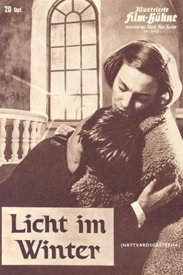
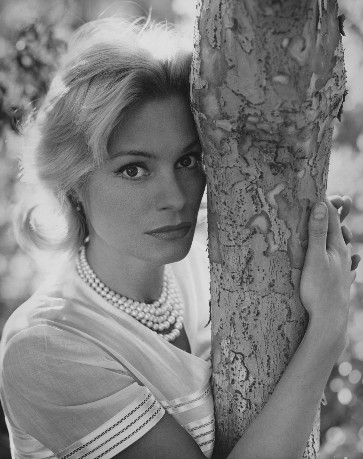

#9153 Licht im Winter
Alternativ: Winter Light (Englischer Titel)
 
 IMDB-Wertung: 8.1 / 10
IMDB-Wertung: 8.1 / 10  Metascore: 0
Metascore: 0 
Seit dem Tod seiner Frau hat Pfarrer Tomas Ericsson auch den Glauben an Gott und die Fähigkeit zu lieben verloren. Emotionslos und ohne Überzeugung absolviert er seine Gottesdienste in der kleinen Dorfkirche. Als ihn die Frau des selbstmordgefährdeten Fischers Jonas bittet, ihrem Mann neuen Lebensmut zu schenken, hat er aufgrund seiner eigenen Resignation nur leere Phrasen für den Verzweifelten übrig. Auch für die Lehrerin Märta, die ihn mit ihrer Liebe bedrängt, findet er keine Gefühle. Als kurze Zeit später die Leiche des Fischers gefunden wird, steht Tomas vor den Trümmern seines Glaubens.
Jahr: 1963
Dauer: 81 Minuten
FSK: 16
Land: Schweden Studio: Nora-FilmverleihTonspuren:
Untertitel: Deutsch,
Auflösung: 1080p (1440x1080) Größe: 5591 MB
Genre: Drama
Regisseur:  Ingmar Bergman
Ingmar Bergman
Drehbuch: Ingmar Bergman
Soundtrack: Evald Andersson
Darsteller:
-  Ingrid Thulin als Märta Lundberg, Schoolteacher
 Gunnar Björnstrand als Tomas Ericsson, Pastor
Gunnar Björnstrand als Tomas Ericsson, Pastor Gunnel Lindblom als Karin Persson
Gunnel Lindblom als Karin Persson Max von Sydow als Jonas Persson
Max von Sydow als Jonas Persson Allan Edwall als Algot Frövik, Sexton
Allan Edwall als Algot Frövik, Sexton- Kolbjörn Knudsen als Knut Aronsson, Warden
- Olof Thunberg als Fredrik Blom, Organist
- Elsa Ebbesen als Magdalena Ledfors, Widow
 Eddie Axberg als Johan Strand, Schoolboy (uncredited)
Eddie Axberg als Johan Strand, Schoolboy (uncredited)- Lars-Olof Andersson als Young boy (uncredited)
- Tor Borong als Johan Åkerblom, Homesteader (uncredited)
- Lars-Owe Carlberg als Parish Constable (uncredited)
- Ingmari Hjort als Persson's daughter (uncredited)
- Stefan Larsson als Persson's son (uncredited)
- Johan Olafs als Gentleman with Horse (uncredited)
- Bertha Sånnell als Hanna Appelblad, Baker with Daughter (uncredited)
- Christer Öhman als Young boy (uncredited)
Datei: X:\1963\Licht im Winter (1963, FSK16, 1440x1080).mkv seit 19.07.2018
Festplatte: HD 1900-1970
 Es gibt insgesamt 23 Filme in der Gruppe '1963'
Es gibt insgesamt 23 Filme in der Gruppe '1963'